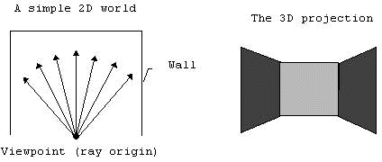
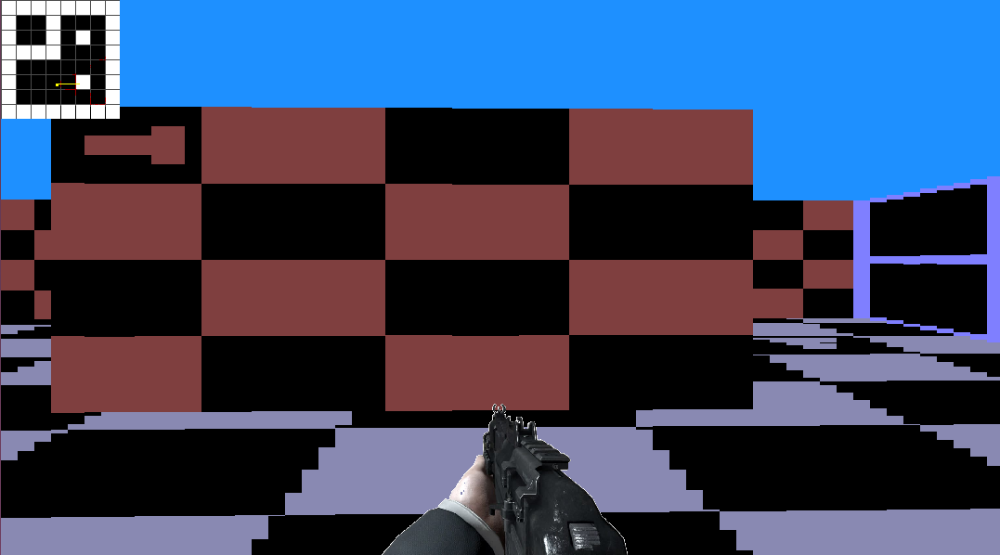
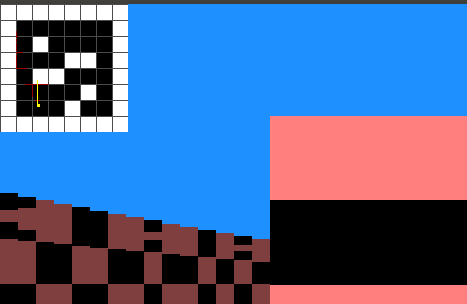
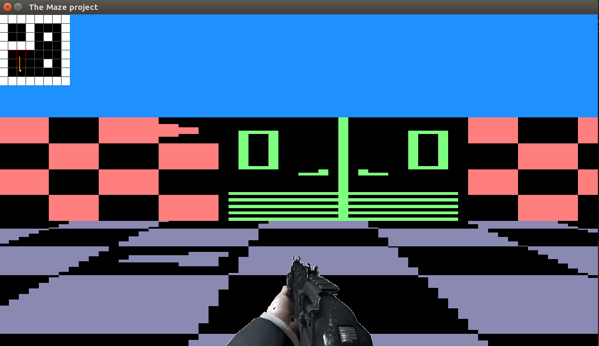
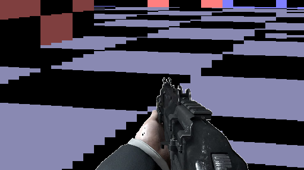
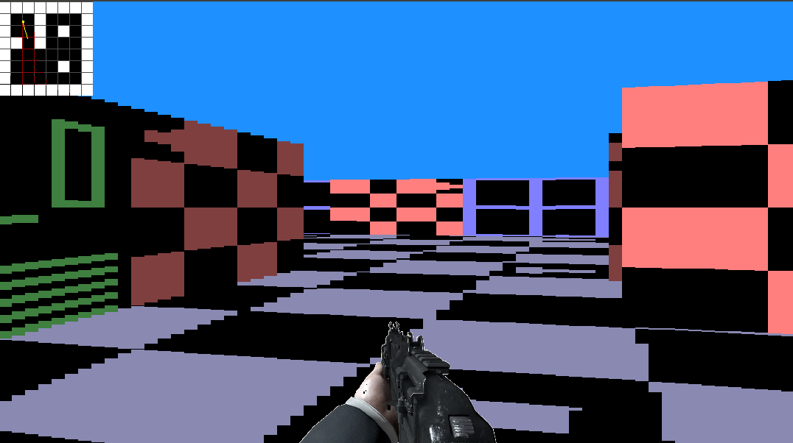

Introduction
Ray-casting
This is a 2D game which are developed using ray-casting technique.ray-casting is a techniques that transform a limited form of data(a very simplified map or floor plan) into a 3D projection by tracing rays from the view point inot the viewing volume. Ray-casting sensation began with the release of a game, Wolfenstein 3D(iD software), in 1992. raycasting can go very fast, because only a calculation has to be done for every vertical line of the screen.
Features
some of the features that are covered by the Maze project are described below in steps.
Orientation
different color depending on the orientation of the walls

In this part of the project, I have drawn a different color depending on the orientation of the walls. As you can see from the screen shoot, walls facing from one side is drawn in different collor from walls facing from the other side. some of the walls are lighter than the other. some are darker than the other walls
Rotation
rotate the camera during execution
 In this part of the project, I provide a way to rotate the camera during the exectution. the camera is rotated using left & right keys. you can also use a & d from the keybored to rate the camera either clockwise or counterclockwise.both keys from the keybord, arrow or a,d can be used to rotate the player in every direction at a given postion.
In this part of the project, I provide a way to rotate the camera during the exectution. the camera is rotated using left & right keys. you can also use a & d from the keybored to rate the camera either clockwise or counterclockwise.both keys from the keybord, arrow or a,d can be used to rotate the player in every direction at a given postion.
Move
move the camera during execution
 In this part of the project, I have provided a way to move the camera during the execution.The camera is moved forward by pressing the up or w keys from the keyborad. on the other hand the camera is moved backward using down or s keys of the keyborad.
In this part of the project, I have provided a way to move the camera during the execution.The camera is moved forward by pressing the up or w keys from the keyborad. on the other hand the camera is moved backward using down or s keys of the keyborad.
Collision
detect collision of the player
In this part, I have handled the collision of the player so that the player is not able to enter the walls. I have made the player slide on the walls instead of just stop it.simple change to some direction, then the player will slide on the walls. the application detects when the player approaches the wall. if the player is approaches the threshold value, it will be forced to slide the walls.
Parser & Map
parse & draw the map from a file
In this part I have implemented a parser to get the map from a file. thus if the users want to use the default map provided by the application, they can run the application without provideing the path to the map file. If they want theire own map, they can provide the path to the map file & then the application will use the provided map. I have drawn the map of the application on the top left corner of the window. In the map the walls are indicated by the while color whereas the empty spaces are indicated by black colors. the player's line of sight is also included in the map. it is indicated by the line colored with yellow. As you can see the new map which is parsed from the file is drawn on the window.
Texture
texture of the wall & the floor
In this part of the project, we have textured the wall and the floor. the wall is texture with bricks, doors & windows. the direction to empty spaces are also indicated in the wall. the ground is also textured with a beautiful carpet
Multi-task
move & rotate at the same time
In this part of the project, I have added a way to move on several directions & rotate in the same time. for example you can move forwared & rotate in clockwise direction at the same time. This is one way of hadnling multiple events on the same frame
Weapons
weapons texture
In this part of the project, I have added a weapon texture to the line of sight of the player. whenever you move to some direction, the weapon is also with you. by default I have positioned at the center width of the screen & It will move whenever the player move to some direction. In the future we can add possibilites of changing the weapon with some key from the keyboared.
door
open the door
In this part of the project, I have added a way to pen the door during the execution. Thus first the player will move to the door and the user must click the an e key from the keyboard. In that case the door will open for the player. As you can see from the screenshot, the door is opened and allows the player to move when the user click an e key from the keyboard.
Social
Future Task
Due to shortage of time I was unable to complete all parts of project. I will hopefully add the following in the features
- handling the gun shoot
- Adding rain & a possibility to stop / start the rain